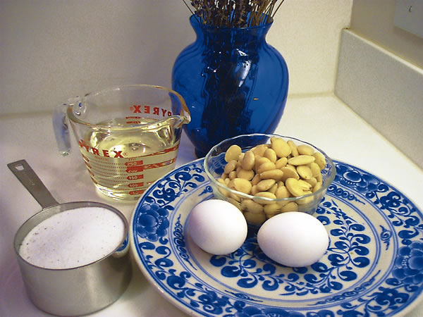
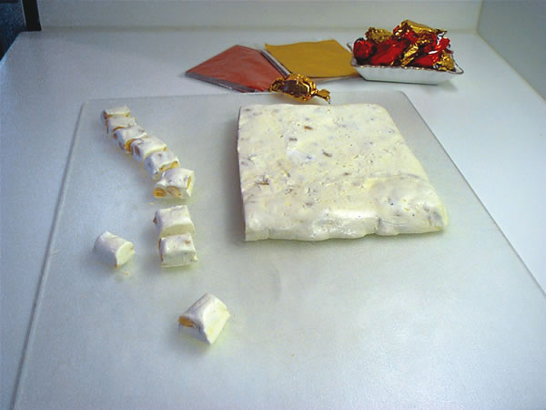

Country Lore: Make Exotic Lavender Nougat Candy
Make lavender almond nougat from scratch.
By Kathy Gehrt
October/November 2006
Nougat is a traditional French candy - originating in the Roman Empire - made with sugar or honey, egg whites and roasted nuts. Infused with lavender, this version of the sweet treat tastes like summer in Provence. Once you have tasted lavender nougat, you’ll know why it was made for special occasions as an offering to the gods.
The story I prefer tells that a farmer’s wife created nougat candy to take advantage of plentiful almonds, honey and eggs from her farm. I am sure she also added a touch of lavender.
This modern version of the candy can be a tasty holiday gift. Wrap individual pieces in colorful foil wrappers for a festive touch.
Lavender flowers give this confection its fragrant flavor. If you have lavender in your garden, you can harvest the flowers in the summer. Simply dry and store them in an airtight container in your pantry. Or you can buy dried lavender at natural food stores.
Lavender Almond Nougat
2 cups sugar
2 tbsp lavender flowers
1 1/3 cups light corn syrup
2 egg whites
1 cup blanched almonds
2 tbsp butter
- To make lavender sugar, blend a quarter cup of sugar and 2 tablespoons of lavender flowers in a food processor. Add the remaining 1 3/4 cup sugar, mix well and store. To allow time for the flowers to perfume the sugar, prepare the lavender sugar at least 3 days before you make the candy.
- Combine 6 tablespoons lavender sugar with 1 tablespoon water and a third cup light corn syrup in a heavy 2 quart saucepan, stir over low heat until the mixture comes to a boil. Cover and cook about 3 minutes. While the syrup mixture is cooking, butter an 8-by-8-inch pan and dust with powdered sugar.
- Remove the saucepan cover and clip a candy thermometer to the side of the pan. Continue cooking the syrup over medium heat, without stirring, until the temperature reaches 234 degrees (soft-ball stage). Remove the pan from the stove and let it sit while you do the next step.
- Beat 2 egg whites with a mixer until very stiff with dry peaks. Slowly add the hot syrup to the egg whites, beating at least 5 minutes until the mixture is thick and creamy, like marshmallow cream.
- In a heavy quart pan, blend 1 cup light corn syrup and 1 cup lavender sugar. Cook over low heat, stirring until the mixture begins to boil. Cover and continue to cook for 3 minutes. Remove the cover and continue to boil rapidly without stirring, until the candy thermometer reaches 285 degrees. Remove from heat.
- Pour this syrup into the first mixture, beating well. The nougat will be glossy white, the consistency thick and sticky. Stir in 1 cup blanched almonds and 2 tablespoons butter.
- Pour into the prepared pan, and set in a cool place for 12 hours. Remove nougat from the pan and cut into 1-by-1-inch pieces.
Kathy Gehrt
Seattle, Washington

KATHY GEHRT
Delicious nougat candy uses simple ingredients.
|

KATHY GEHRT
Lavender Almond Nougat
|
|